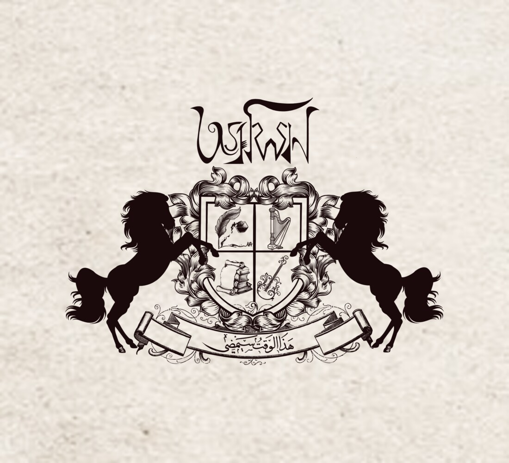
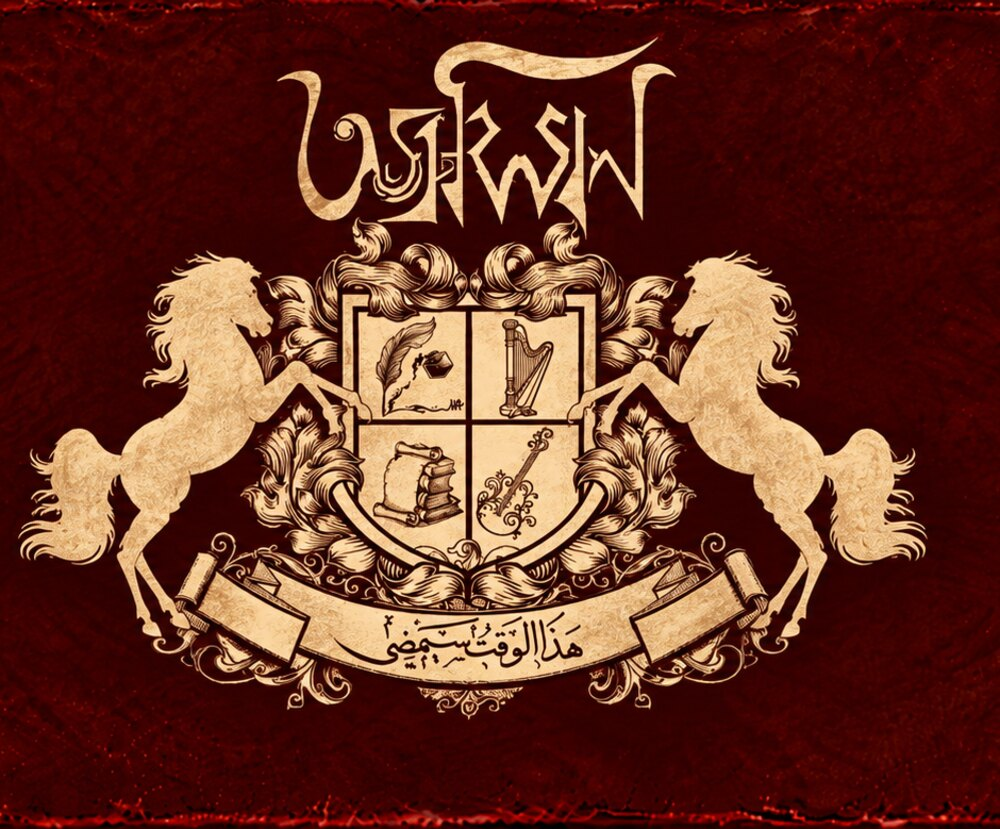
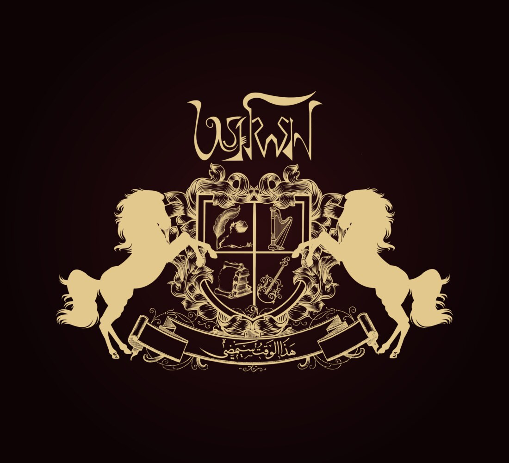

The Crest
Two horses, a quartered shield and a line of Arabic. Nothing on it is decoration.

The twins who ride at dawn
In the Rigveda the অশ্বিনীকুমার are twin entities: নাসত্য (Nasatya), the elder, and দস্র (Dasra), the younger. They are the sons of Surya, the sun, and Sharanyu, who met in the form of horses. That is where the horses come from, and the name with them. Ashwa is horse.
They are the physicians of the celestial entities, the ones called on to heal and to restore. They travel in a golden chariot, স্বর্ণরথ, and they belong to the hour before sunrise. In the Mahabharata they father the twin Pandavas নকুল and সহদেব; in the older story they give the aged sage Chyavana his youth back.
Twins, healers, and always two. We took the name before we understood how exactly it would fit.
Twins who are nothing alike
We are twins in the way the Ashwins are twins. One of us spends his working life on the mathematics of particle physics. The other spends his as a doctor. The entities we are named after were physicians too, and the old descriptions hand them both departments at once: medicine and the sciences. One horse for each. That part we did not plan.
The pair is also a great deal older than the Rigveda. The same two horsemen ride through Greek, Latvian and Lithuanian under different names, doing the same job, and they have been at it for something like four thousand years.
Four quarters
The escutcheon is divided in four. Two quarters belong to the word, two to the sound, and that is the whole arrangement of this project rendered in miniature.
The quill and the inkwell
The words, in Bangla. On about half the songs they come first and the music is built to carry them. On the rest they are written into a melody that already exists.
The harp
The melody itself, and the arrangement that grows around it until the song is ready for other hands.
The scroll and the books
What is kept. Both of us came to music from long years of study, and neither of us can shake the habit of reading first.
The bowed strings
The song once it leaves us: played, sung, recorded, and no longer only ours.

The banner under the shield carries one line of Arabic. Word for word it reads this time will pass, and behind it stands the old proverb that turns up in every language worth the name: this too shall pass.
It is usually offered as comfort, and it is. But read it the other way and it stops being comfortable. The good hour passes too. The voice you have now, the people who happen to be in the room, the particular thing you can only make this year: all of it is on its way out. So the line is not really about endurance. It is an instruction to work.
Three dresses
Drawn once, worn differently: ink on parchment, gold on velvet, gold on black.
